Revitalizing Ping ISI BeCu Irons
It took me seventeen years to get three thousand hits in baseball. I did it in one afternoon on the golf course.
– Hank Aaron
eBay Find
I’m a sucker for classic Ping clubs and found these ISIs on eBay. Most interesting to me was that the clubs were:
- beryllium copper and
- appeared to be in great shape.
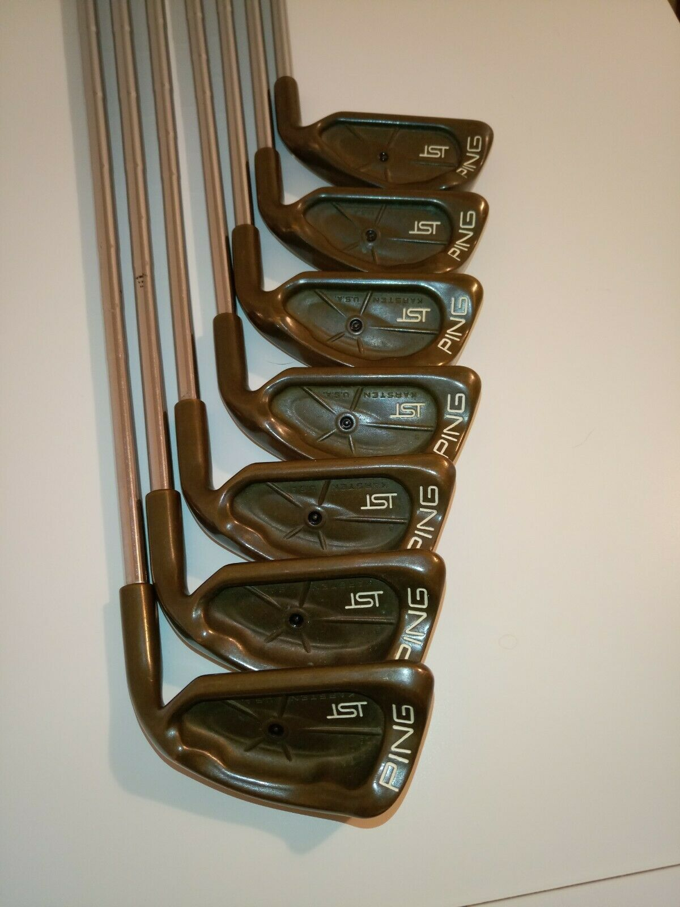
Beryllium copper (BeCu) became popular back in the mid/late ’80s principally because it was advertised as offering a softer feel than many of the equivalent cast steel designs of the time. A lot of people also liked the material as it took on a patina as it aged which was cosmetically attractive and very durable in that it ‘healed’ any scratches or blemishes when it darkened. It was used by numerous manufacturers, perhaps most notably by Ping.
I submitted an offer and ‘won’ the clubs for what I consider to be a great deal and started planning my weekend project. The clubs arrived on a Friday along with another package from GolfWorks.com.
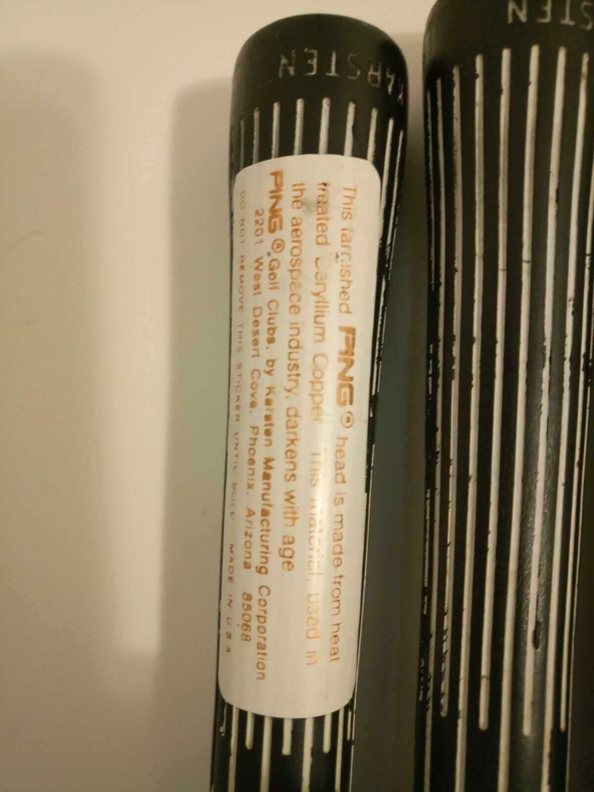
For 20 year old clubs, they were in pristine condition and still had the 1998 price tags & labels on the dry rotted grips. My plan was to re-grip the clubs, add 1/2” shaft extensions, and knock off the tarnish.
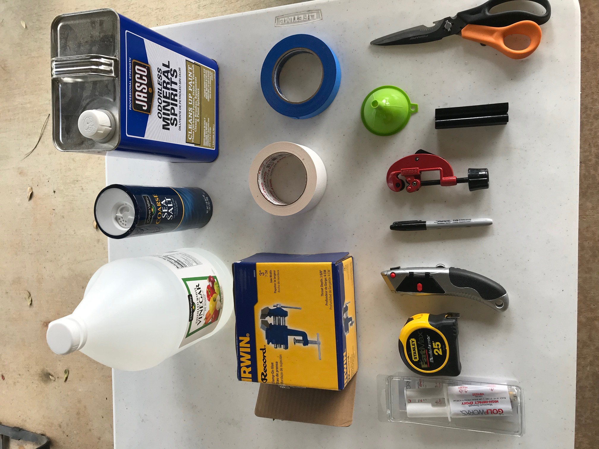
In preparation for this project, I acquired some supplies. Starting from the top left of the picture above, here are the items along with some uses:
- Vinegar & sea salt will be used for removing tarnish.
- Mineral spirits are used for cleaning the club shafts and activating the grip tape.
- Clap-on vise for holding the clubs.
- Two-sided grip tape.
- Blue masking tape.
- Golf club epoxy.
- For golfsmithing, I’ve found a long aluminum club ruler works best but for this project, a tape measure will suffice.
- Utility knife with hook blade.
- Sharpie marker.
- Pipe cutter.
- Rubber shaft clamp to better stabalize and protect the club shaft in the vise.
- Small funnel purchased from the Dollar Store after my wife found me rummaging throught the kitchen.
- Scissors for cutting grip tape.
- Scotch Brite pads (not shown).
- Shop rags (not shown).
- 2-gallon bucket (not shown).
The white folding table in the above picture was used throughout the project for staging the clubs & supplies. Not shown was a box full of new Ping grips and the shaft extensions purchased from GolfWorks along with some shop rags & a 2-gallon bucket.
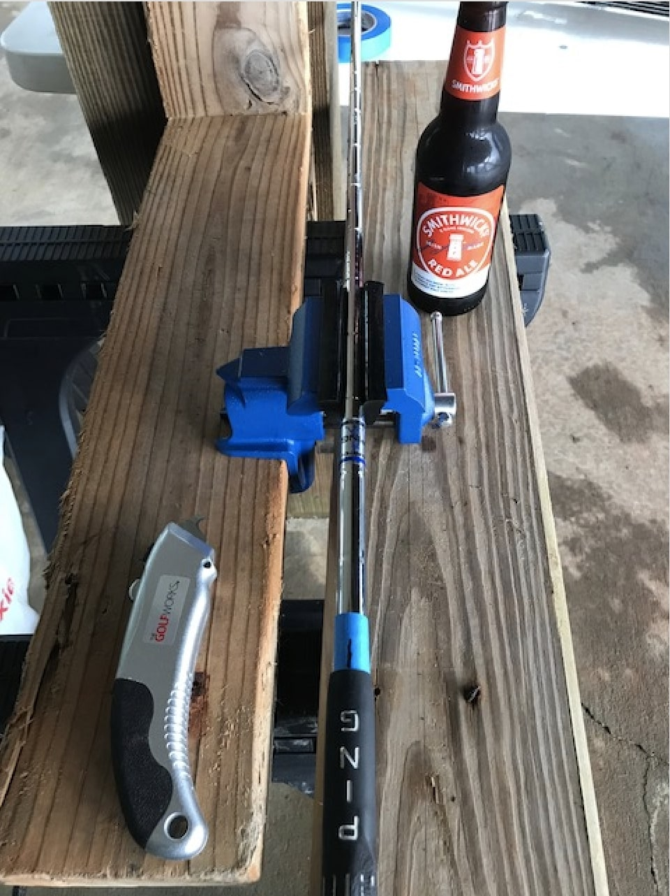
This project was conducted at a vacation home on Mobile Bay. Since there really isn’t a good place to permently mount a vise, I assembled a temporary work station using a couple saw horses and some 2x6 boards. The boards were acquired through pier damage from Hurricane Nate. One of the boards was attached to another 2x6 in a ‘T’. This worked well for me as it helped stabalize the psuedo-work bench and provided support when pushing on the new grips as it was backed against a piling under the house.
Remove Old Grips
Before removing the old grips, it is a good idea to square the clubface and mark the shaft for aligning the new grips. I use masking tape for this. Otherwise, your sharpie mark would likely be removed when cleaning the shaft with mineral spirits.
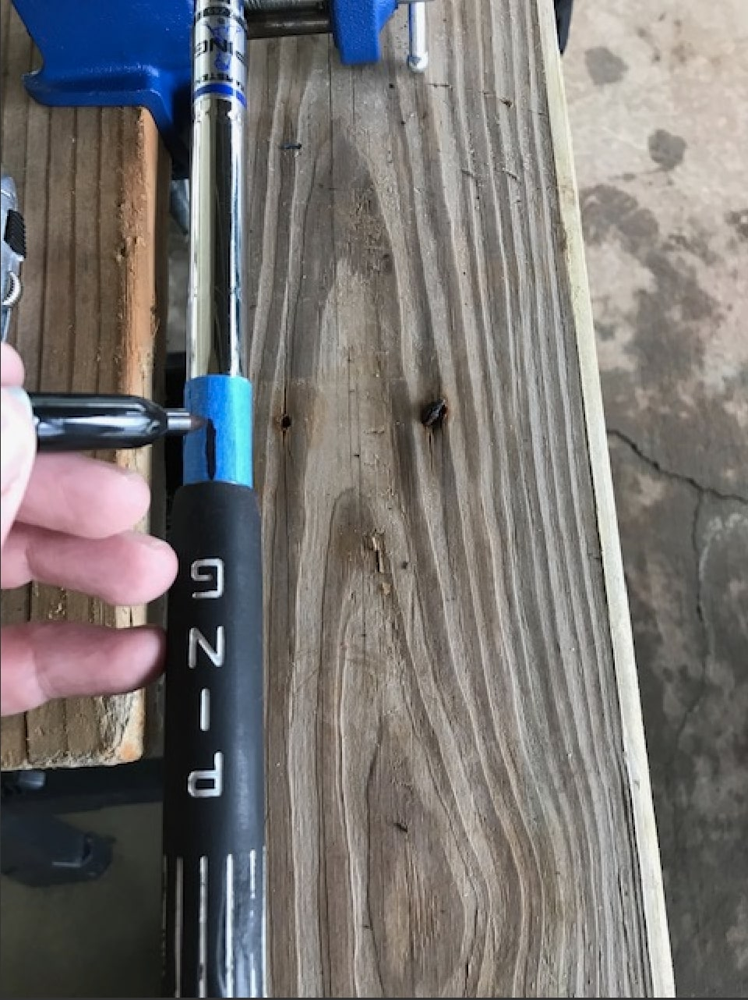
Using the rubber shaft clamp, mount a club in the vise. The rubber shaft clamp helps grip the club and protects the shaft from getting crushed. You will need to tighten the vise such that the club doesn’t slip while removing the old grips.
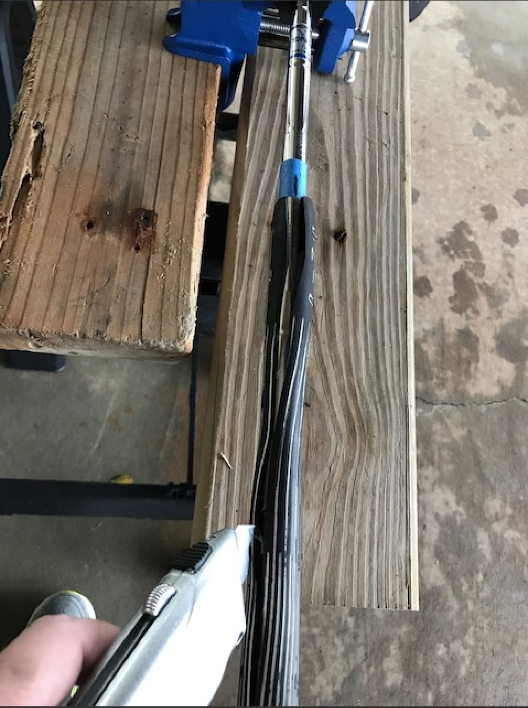
Using the utility knife, cut down the length of the old grip. I’m using a hook blade which works very well. A straight blade would work also but cutting too deep could leave a mark on the shaft.
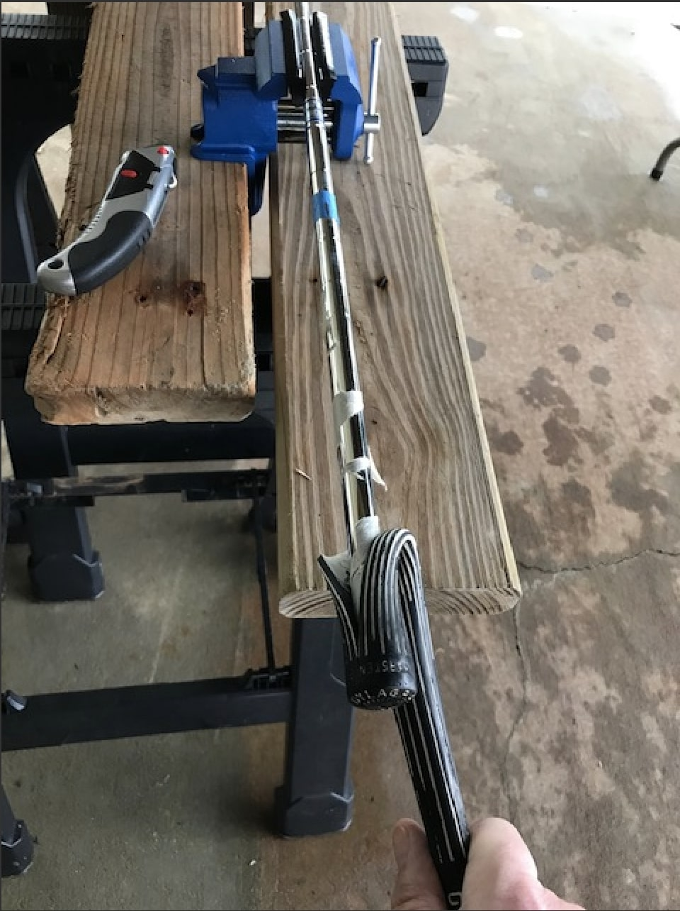
After cutting down the length of the grip, you can pull the old grips off in a manner similar to peeling a banana. Really stuborn grips may require multiple cuts down the length of the grip but it usually only takes one. If you are lucky, the old grip tape comes off with the grip. Use mineral spirits and a shop rag to remove any grip tape and other remnants from the shaft.
If this were just a grip replacement project, you could leave the club in the vise and install the new grip but I also want to increase the club length by adding a 1/2" extension. Therefore, remove the current club and repeat the grip removal process on all of the other clubs.
Add Shaft Extensions
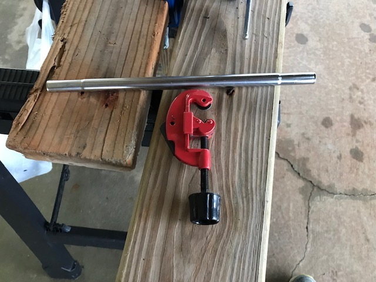
Shaft extensions come in several different material types and lengths. The standard for most men’s steel shafts is .600 diameter steel extensions but aluminum and plastic extension are available. A popular extension for steel shafts are approximately 12" long with tapered sections at both ends. This allows a golfsmith to use it for two extensions.
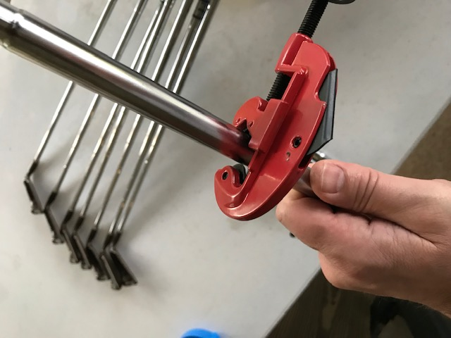
Since I only want to use the outer 1/2" of the extensions, I cut them at approximately the midpoint.
Cut the extensions by placing them into the pipe cutter and tightening the cutter until it is slightly snug. Holding the extension stationary with one hand, rotate the pipe cutter around the extension while continually tightening the cutter after each rotation. Be careful to not over tighten as that could bend the extension. The cut should be complete after a few rotations.
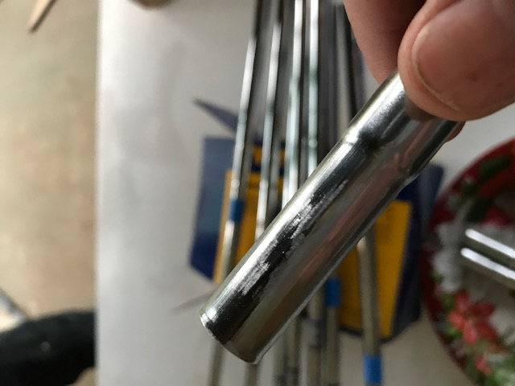
To help the epoxy adhere, use a file, emory cloth, or some ruff sandpaper to ‘scuff’ up the portion that will be inserted inside the butt of the shaft.
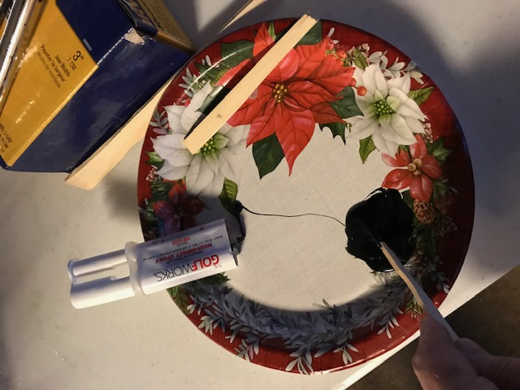
Golf club epoxy usually comes in two tubes and requires mixing at the time of use. A disposable bowl or plate work nicely for this.
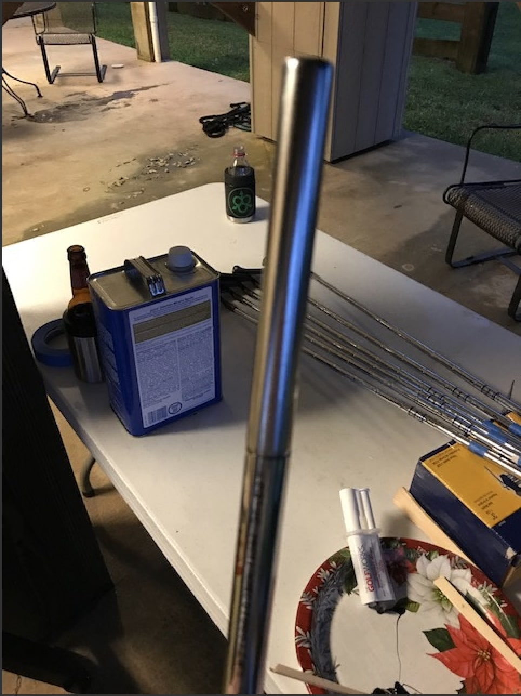
Using something such as a wooden popsickle stick, mix the epoxy and then apply it liberally to the portion of the extension to be inserted. After putting the extension into the shaft wipe away any excess using a shop rag.
Continue this process for all the clubs. Depending on epoxy used, the clubs will likely need several hours to ‘cure’ before continuing. See you in the morning!
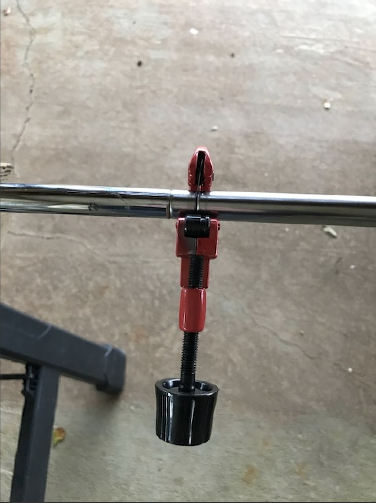
After the epoxy on the extensions have ‘set’ (for me, it was overnight), it is time to trim to the desired length. As mentioned above, my goal is to add 1/2" to the overall club length. For this cut, I used the vise to hold the clubs.
Add New Grips
When mounting the new grips, you will need both hands. Using the rubber shaft insert, mount the club in the vise and align the club such that the clubface is square and aligned with the mark made earlier. Give the club’s grip area a quick wipe with a shop rag damp with mineral spirits.
Grip tape is double-sided. The bottom side is sticky and will attach to the shaft. The upper sticky side will be exposed by peeling off the backing. I prefer 2" wide grip tape that adheres long ways down the shaft.
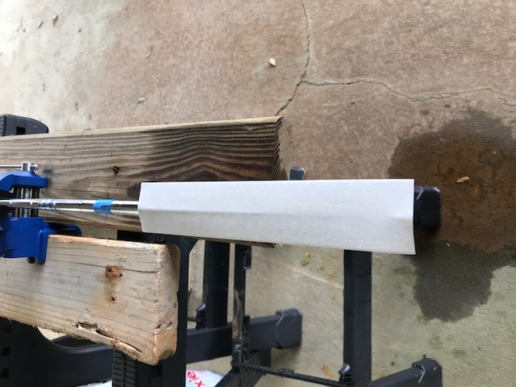
Cut a strip of grip tape that is slightly shorter than your grips. For me, that is 10". Place the strip on the shaft such that approximately 1/8" overlaps the end. I put the middle of the strip on top of the shaft and wrap the tape around.
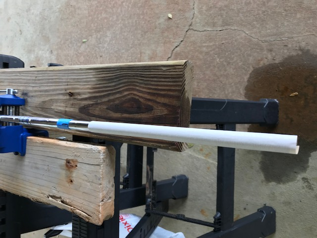
Once the tape is wrapped around the shaft, peel off the backing to expose the sticky upper side.
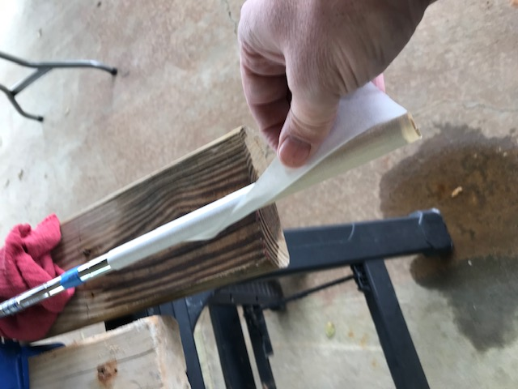
Crimp down the portion overlaping the end of the club. This will 1) protect your grip from any sharp edges of the club and 2) make it easier to get the grip started on the shaft.
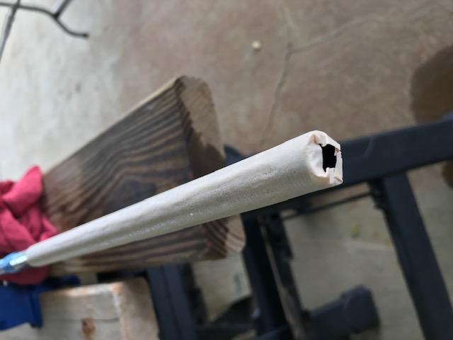
Mineral spirits “activates” the grip tape for installation of the new grips. To apply the mineral spirits, use the funnel to pour a few ounces into one of the new grips while holding a finger over the small drain hole in the butt. Remove the funnel, cover the big hole, and give the grip a little shake to coat the inside.
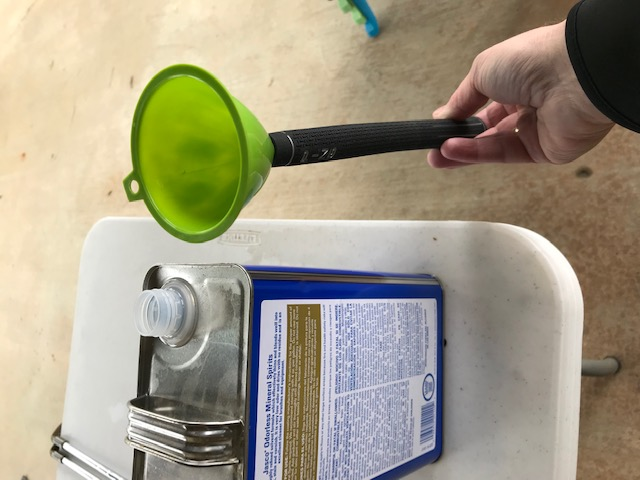
With mineral spirits still inside, hold the new grip over the shaft and dribble spirits over the length of the tape. This will make the outer portion of the tape slippery for a minute or so.
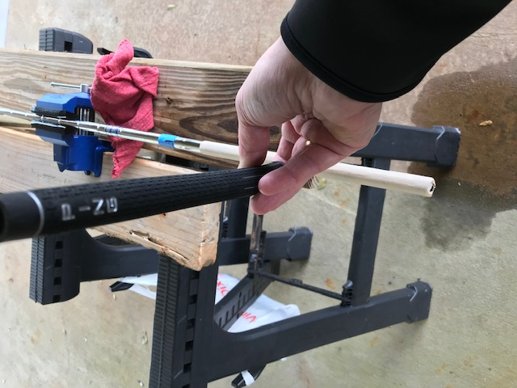
Being mindful about alignment, start pushing the new grip onto the slippery shaft. Once the grip gets started, use a continuous push / pull motion to fully seat the grip. One hand forward pulling the grip and one hand near the butt pushing the grip. Simply pulling might stretch the grip and cause the diameter to be thinner and only pushing could cause the opposite. I’m installing oversize grips and want the size exactly as intended.
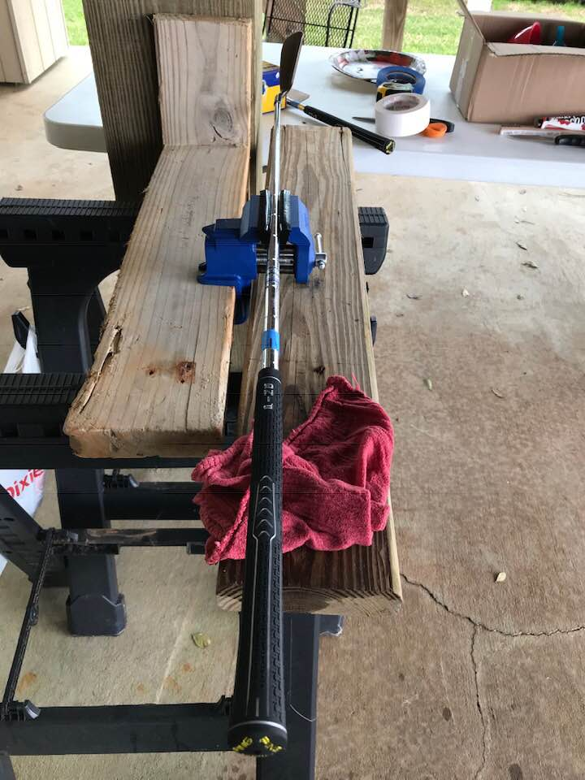
Look down the grip toward the clubface, and adjust the grip alignment such that it is square with, or parallel to, the clubface. You have about two minutes to make adjustments before the mineral spirits dry and the tape becomes too sticking.
Repeat this process for all the clubs.
Remove Tarnish
As mentioned earlier, beryllium copper (BeCu) develops a brown patina. I don’t dislike the patina but want to make these clubs ‘mine’ and watch them turn from copper to brown as if I were the original owner.
While many polishing compounds would work, my goal is to knock off the tarnish instead of making them shiny. Additionally, I don’t want to remove any of the original lettering or ‘dot’ marking from Ping. Some Internet research led me to try a mixture of sea salt and vinegar.
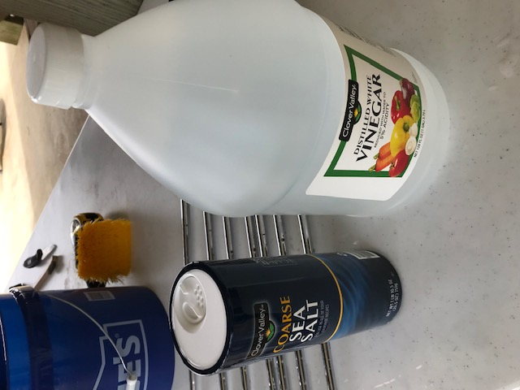
I don’t know the exact ratio of my mixture but I poured enough salt to cover the bottom of a 2-gallon bucket and then added enough vinegar to cover the club heads. I also used a club to mix the solution until all the salt had dissolved.
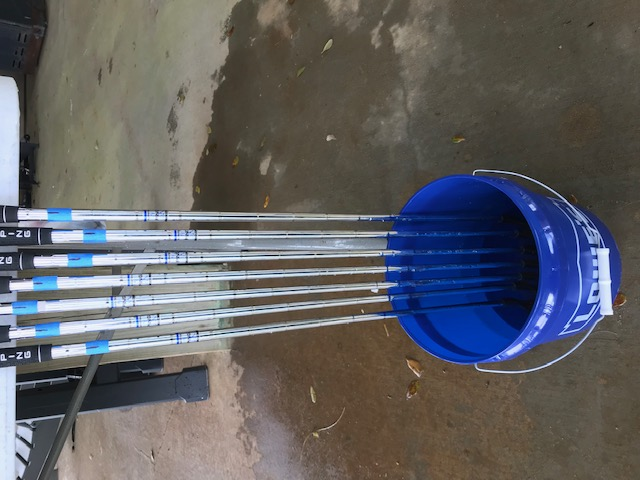
The clubs soaked in the solution for the length of time it took me to make and eat a sandwich, which was approximately 25 minutes.
Each club head was given a light scrub using a Scotch Brite pad.
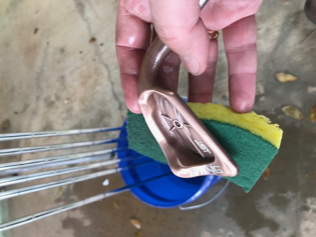
Not too shiny but more of how they would have looked in an Edwin Watts showroom circa 1998.
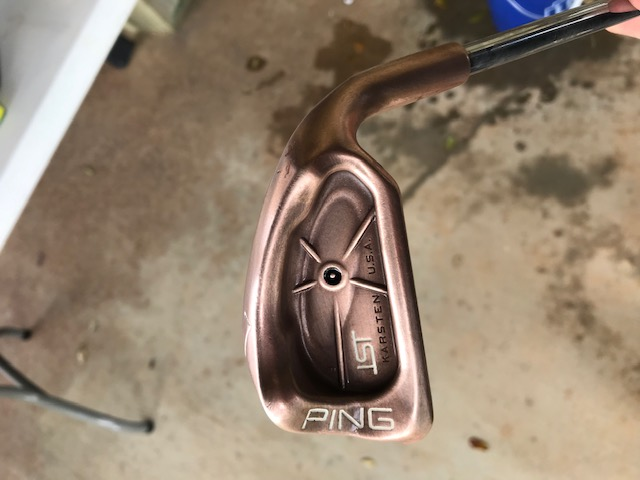
Rinse with water when you are finished and wipe dry with a towel or rag.
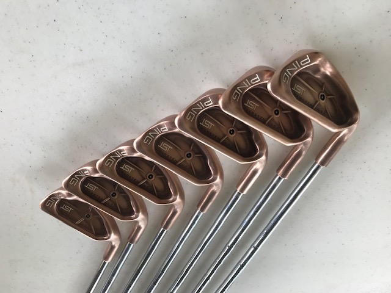
Celebrate
I enjoy a good round of golf but probably had just as much fun refurbishing and customizing these clubs. The end product looks great and I expect to keep the clubs for a lifetime.
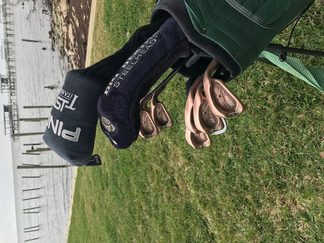
The clubs swing great and now I just have to get one or more of my daughters into playing golf.
Comments are welcome below or via email at james.davisphd@gmail.com.
Happy golfing! – Dr. James Davis